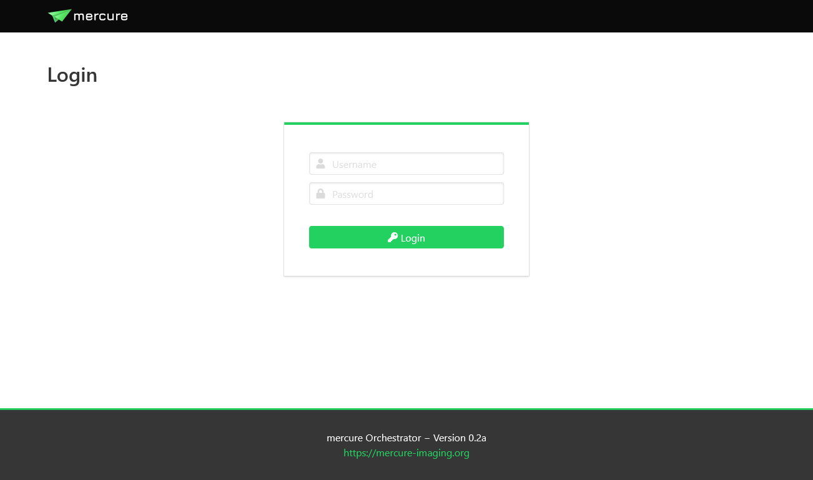
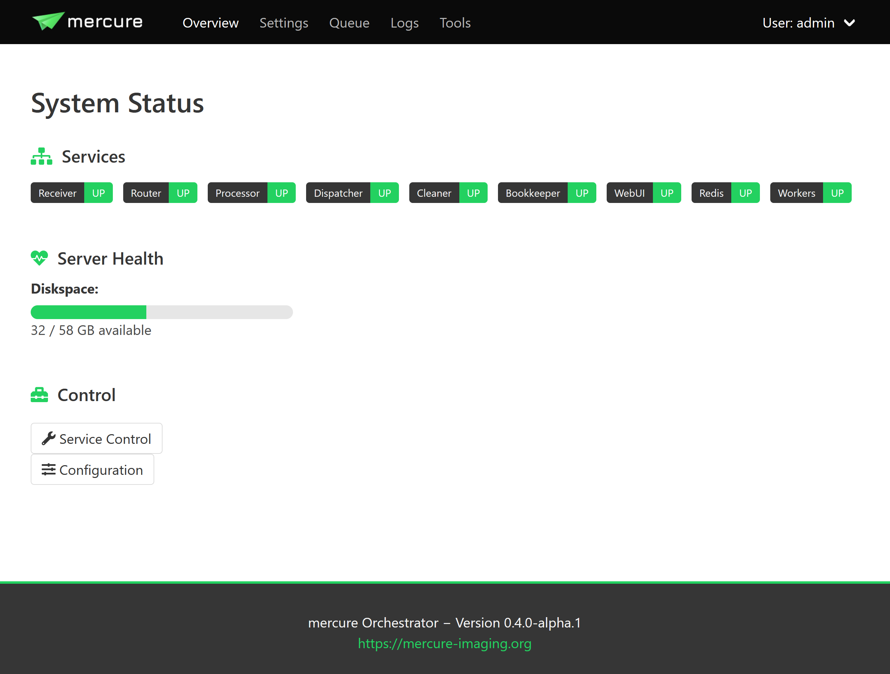
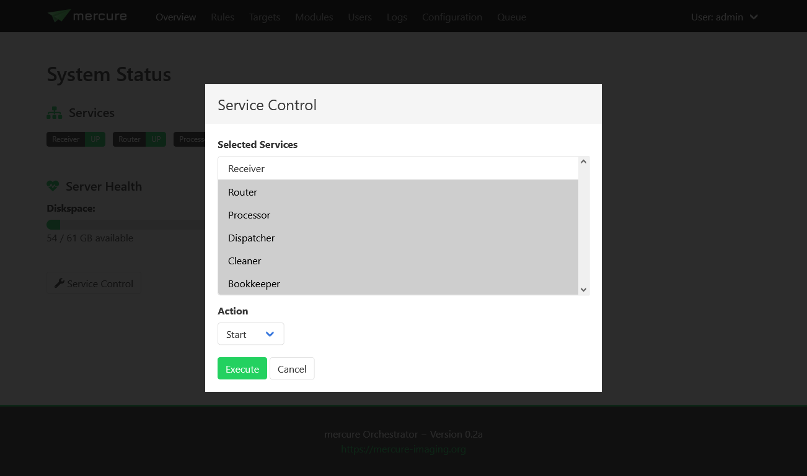

Usage
Web Interface
mercure can be conveniently configured and controlled using the web-based user interface. To access it, use a modern web browser (e.g., Chrome or Firefox) and enter the IP of your mercure server as URL. Depending on the port that you have selected during the installation (by default 8000), you need to add “:8000” to the URL.
{kind=link}
During the installation, mercure creates a “seed account” that you need to use for the first login. You will be asked to change the password after the first login.
Note
The login credentials for the first login are: Username = admin, Password = router
To end your session, use the menu on the top-right and select “Logout”.
User Management
Users can be created, modified, and deleted on the “Settings > Users” page. There are two types of users: Normal users, who can view the configuration and status but not change any settings, and administrators, who have full access. Users with administration rights are indicated by an icon with a shield in the user list. Users can also be added to permission groups. Permission groups are not yet used for anything, but they will be used in future mercure versions to provide granular access control.

Tip
You should create separate accounts for every person using mercure. This will allow you to review which user made changes to the server configuration, as mercure is keeping track of all configuration changes.
System Status and Control
The status of the mercure server and its service components can be monitored on the “Overview” page. If a service module is running, it will be shown in green color, otherwise it is shown in red. In normal operation, everything should be green.
{kind=link}
The Overview page also shows the disk space available in the folder for buffering the incoming DICOM files. If this bar turns yellow or red, make sure to free up disk space as the mercure server will not be able to receive images if the disk is completely full.
You can start, stop, and restart services by clicking the “Service Control” button. This will show a dialog where you can select which service(s) to control and which operation to execute (e.g., start or stop). If a service does not react anymore at all, it is also possible to kill a service.
{kind=link}
Note
If you stop a service, it might take a short moment until the service goes down. This is because the services have been designed to finish the active task before terminating.
Note
The “Service Control” button is only available for systemd- and Docker-type installations but not for Nomad-type installations. Nomad directly takes care restarting services.
Tip
If you don’t want to use the web interface, you can also manually control the mercure services from the command line. For systemd-type installations, this can be done with the command “systemctl start -u mercure_router.service” (in this example for the routing service). You can find the names of the individual services in the file /opt/mercure/config/services.json.
The configuraton of mercure can be reviewed by pressing the “Configuration” button. Settings can be changed by pression the “Edit” button on the Configuration page. The mercure service components automatically reload the settings when the configuration has been changed, with the exception of the Receiver service. Thus, if you make changes relevant to the Receiver service, you need to restart it for the changes to take effect.